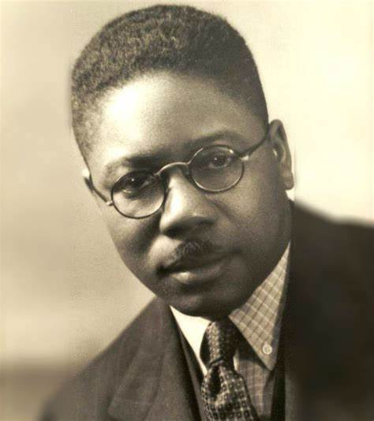

Aaron Douglas, was born in 1899 in Topeka Kansas and is known as one of the most accomplished and influential visual artists of the Harlem Renaissance. Douglas was referred to as “the father of Black American art” and came to fame during the New Negro Movement in the 1920s with his mural paintings and illustrations that addressed social issues around race and segregation in the U.S. by using African-centric imagery. Douglas is also known for his time working as a professor at historically black universities in the 1930s and 1940s.
Ever since Aaron Douglas came to Harlem in 1925, his paintings and graphic art were very successful and won him many awards that rose him to fame. His works focused primarily on his interest in modernism, African Art, Art Deco, and elements of Egyptian wall paintings. However, he is known best for creating powerful images of African American life and struggles through his works. 